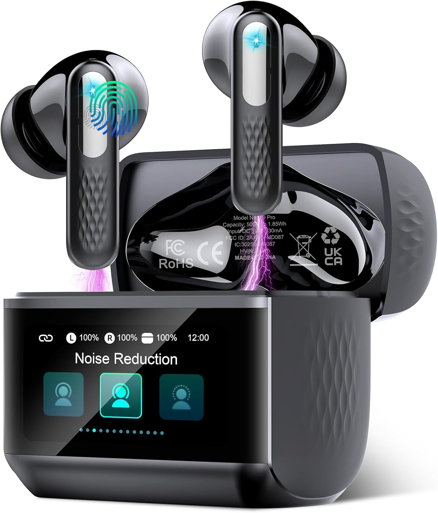
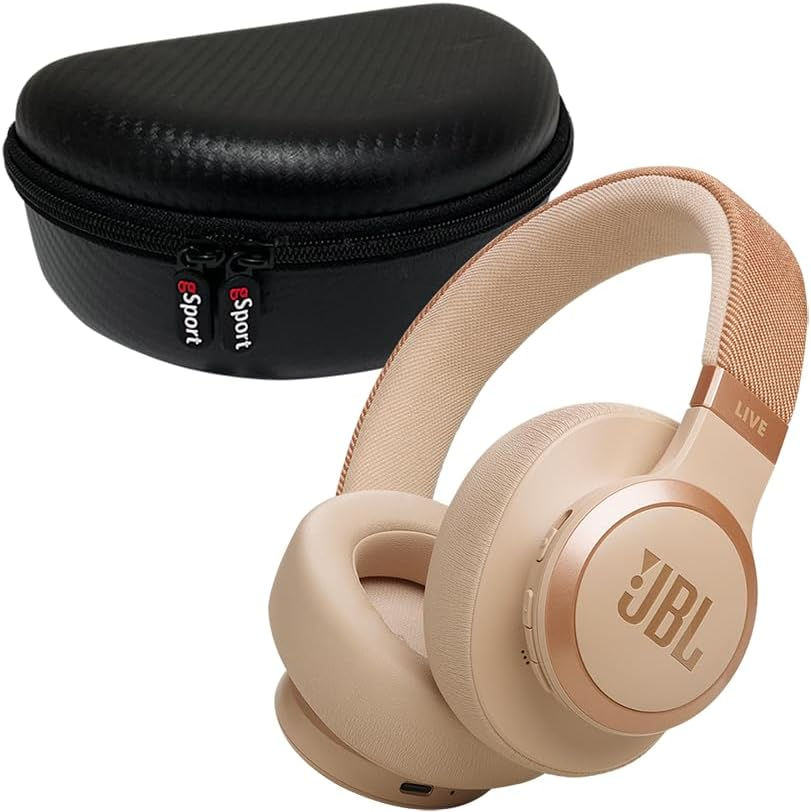

Recomendación rápida: si buscas equilibrio general, el Sony WH-CH720N es una compra muy sólida. Si quieres más funciones por menos dinero, el Soundcore Space One ofrece un valor excelente. Si priorizas autonomÃa y graves, el JBL Tune 770NC destaca claramente.
Ver auriculares en AmazonComparativa rápida
| Modelo | Lo mejor | BaterÃa | Para quién |
|---|---|---|---|
| Sony WH-CH720N | Muy equilibrado | Hasta 35-50 h | Trabajo y uso diario |
| Soundcore Space One | Gran valor | Hasta 40-55 h | Quien busca funciones |
| JBL Tune 770NC | AutonomÃa alta | Hasta 70 h | Viajes y ocio |
Qué tener en cuenta antes de comprar
Para elegir bien unos auriculares inalámbricos no basta con mirar el precio. Conviene valorar comodidad, autonomÃa, estabilidad Bluetooth, calidad de sonido y si realmente necesitas cancelación de ruido. En esta comparativa hemos priorizado modelos equilibrados, conocidos y fáciles de recomendar para la mayorÃa de usos.
La idea de esta review es simple: ayudarte a decidir rápido, sin relleno y con opciones razonables para comprar mejor. No todos los modelos sirven para todo el mundo, asà que lo importante es elegir según tu caso real y no solo por marketing.
1. Sony WH-CH720N

Modelo muy recomendable por comodidad, ligereza y cancelación de ruido suficiente para la mayorÃa. Es una opción muy sensata para teletrabajo, estudio y desplazamientos diarios.
- Muy cómodo para uso prolongado
- Buen equilibrio general
- Marca fiable y fácil de recomendar
2. Soundcore Space One
Muy buena compra si quieres funciones premium sin subir demasiado de presupuesto. Destaca por autonomÃa, app y relación calidad-precio.
- Muy competitivo por precio
- Funciones avanzadas para su rango
- Compra inteligente si quieres exprimir presupuesto
3. JBL Tune 770NC

Muy interesante para quien valora baterÃa larga y un sonido con más pegada. Funciona bien para ocio, viajes y uso diario sin cargar a menudo.
- BaterÃa muy destacable
- Perfil sonoro agradable para mucho público
- Buena opción para viajar
Cuál elegir según tu caso
Compra el Sony si quieres equilibrio total. Elige el Soundcore si quieres más funciones por menos dinero. Quédate con el JBL si para ti la baterÃa es prioritaria.
Preguntas rápidas
¿Merece la pena pagar más por cancelación de ruido?
Si trabajas en entornos con ruido o viajas a menudo, sÃ. Si solo los quieres para casa, puede no ser imprescindible.
¿Qué pesa más: baterÃa o sonido?
Depende del uso. Para trabajar o viajar, la baterÃa importa mucho. Para disfrutar música o series, el perfil de sonido puede ser más decisivo.
Conclusión
No hace falta gastar una fortuna para comprar bien. La mejor opción depende de tu uso real, no del marketing. Esta comparativa está pensada para ayudarte a decidir rápido y con criterio.
Ver ofertas actuales
Compara precios y revisa disponibilidad antes de comprar.
Ver ofertas en Amazon